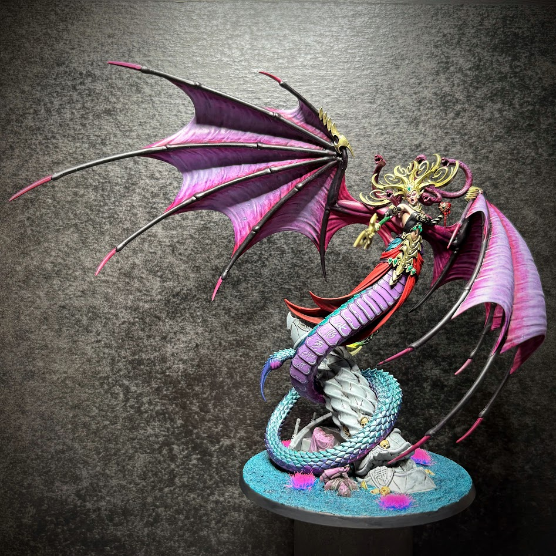
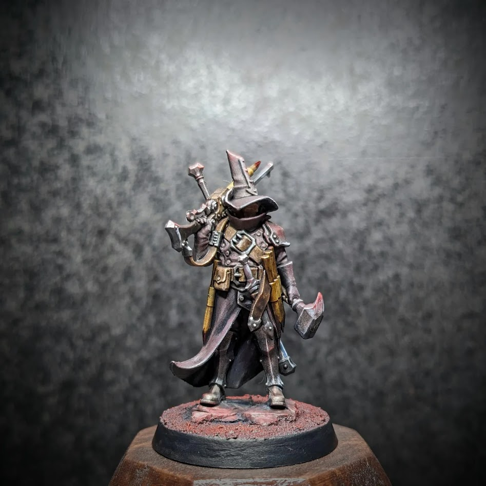

While I'm not entirely sure this was the intended purpose of the assignment, I thought I'd share here:
When we started this class, I immediately had an idea in mind for something I wanted to create throughout the course: I'm
a miniature painted, so I paint miniatures for Dungeons and Dragons, and Warhammer. I thought it would be a cool projects
to create a web-based catalog/database of my completed miniature paint-jobs, and make the site filterable, so if one of my
gaming buddies who wanted to borrow any of them could go to the site and see what I have posted as completed.

